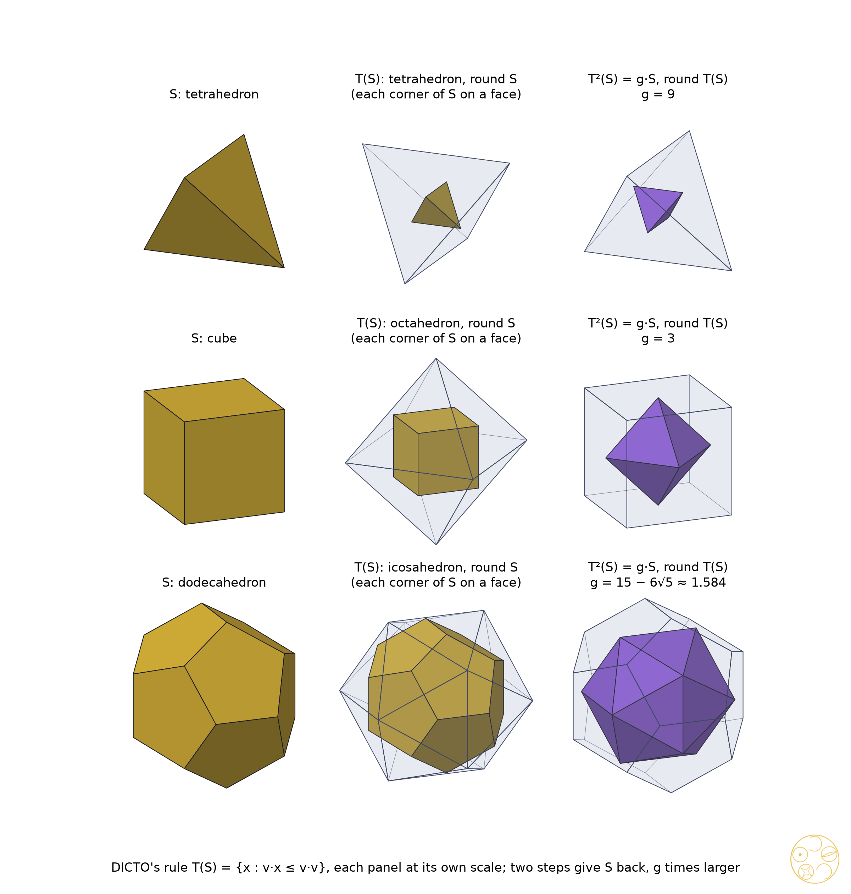

Exact growth of every closed chain of the rule T, for DICTO's solids and the classical ones
Draw a plane through every corner of a solid, square to the line from the centre, and keep what lies inside all the planes. A new solid appears, with a face for every corner of the old one. Do it again, and again: some solids come back to their own shape, only larger.
DICTO's rule T (#38) grows a solid by giving it a face at each corner. Read backwards it is the star step of #78: put a spike on each face with its tip at the foot of the face's perpendicular, scaled by a factor s, and wrap the tips; then T of the wrapped solid is s times the solid one started from (#78, Section 6). So every star chain is a chain of T, and a closed chain of T is a closed star chain.
The rule closes for the icosidodecahedron and DICTO's GTI with the gain 10/φ⁴ (#38) and for the truncated icosahedron with a gain whose norm carries the primes 89 and 109 (#78). This paper finds the gains of all closed chains exactly, explains them where a proof is possible, and tests DICTO's proposal that they form a new series of ratios.
For a radius ρ, the polar of a solid X in the sphere of radius ρ about the centre O is Xρ = {x : y·x ≤ ρ² for every y in X}; for a convex solid only its corners matter. Polar reciprocation is classical: the polar of the polar is the solid itself, and Xa taken in a second sphere gives (Xa)b = (b²/a²)·X.
Lemma 1. (a) T(S) is the polar, in the unit sphere, of the solid whose corners are the inverted corners v/|v|² of S. (b) If all corners of S lie on one sphere of radius R, then T(S) is the polar SR of S in that sphere. (c) T(k·S) = k·T(S) for every k > 0.
Proof. v·x ≤ v·v is the same as (v/|v|²)·x ≤ 1, which gives (a); if |v| = R for every corner, it reads v·x ≤ R², which is (b); and (c) holds because kv·x ≤ k²v·v is v·(x/k) ≤ v·v. ∎
In the plane, T is the classical antipedal (negative pedal) polygon with pedal point O, and part (a) is the polygon form of the known statement that the negative pedal is the polar dual of its inverse (L. G. Gheorghe 2020, stated there as classical). B. M. Stewart proved in 1940 that n antipedal steps bring any n-gon back to a similar one. In space each step turns corners into faces, so the number of corners changes from step to step, and the chains below close in two or four steps whatever the number of corners, or not at all.
If a solid's corners sit on one sphere and so do the corners of its image, the rule is a mirror in a sphere, twice: two steps bring the solid back, larger by the square of the ratio of the two spheres.
Theorem. Let S be a convex solid with its centre inside, all its corners on a sphere of radius R, and let all the corners of T(S) lie on a sphere of radius R′. Then T(T(S)) = (R′/R)²·S: the chain closes in two steps (or one) with radius gain (R′/R)².
Corollary (the Platonic solids). For a Platonic solid with circumradius R and inradius r, T(S) is its dual, touching the sphere of radius R with its faces, and the chain closes in two steps with gain (R/r)² = tan²(π/p)·tan²(π/q) for the Schläfli symbol {p, q}: 9 for the tetrahedron, 3 for the cube and the octahedron, 15 − 6√5 for the dodecahedron and the icosahedron.
Proof. By Lemma 1(b), T(S) = SR, and since the corners of T(S) lie on the sphere of radius R′, T(T(S)) = (SR)R′ = (R′²/R²)·S. For the corollary: the polar of a regular solid in its circumsphere is the dual solid with inradius R. The ratio of circumradius to inradius is the same for a solid and its dual (both equal tan(π/p)tan(π/q)), so the dual's corners lie on the sphere of radius R′ = R·R/r, and the gain is (R′/R)² = (R/r)². ∎

The theorem needs both solids to have their corners on one sphere. A uniform (Archimedean) solid A has its corners on one sphere, so T(A) is its Catalan dual; but the Catalan dual's corners lie on as many spheres as A has kinds of face, and the theorem does not apply. These chains close in four steps, as Section 5 shows; the theorem covers exactly the chains of period two among the classical solids. It also covers DICTO's David and Delilah, whose corners at every step form a single orbit of their symmetry group and so lie on one sphere; David's gain is 10 and Delilah's 3.
DICTO noticed that the four-step factors of the star chain of the truncated icosahedron in #78, 4.944 for golden spikes and 11.542 for doubled ones, are close to 5 and 12, and asked whether such factors form a series.
Proposition 2. Let a star chain grow by spikes whose tips lie at s times the feet of the face perpendiculars, and let its solids lie on a closed chain of T with period p and radius gain g. Then the star chain closes with the same period, and its p-step factor is sp/g.
Proof. By #78, T(Sn+1) = s·Sn, so with Lemma 1(c), Tp(Sn+p) = sp·Sn. On the chain Tp multiplies by g, so Sn+p = (sp/g)·Sn. ∎
For the truncated icosahedron p = 4 and g = (17745 − 7712√5)/361 = 1.3862708, so the factors are φ⁴/g = 4.9442735 and 2⁴/g = 11.5417565, exactly the numbers DICTO saw. They are not 5 and 12; the nearness comes from g lying close to 1.4, and the numbers that carry the structure are the gains g themselves, which the next section lists.
Every Platonic, Archimedean and Catalan solid but four comes back under the rule, and so do ten of DICTO's solids. The growth factors are exact numbers built from √5, √2 or ∛2.
| Solid (Archimedean / Catalan dual) | Period | Radius gain, exact | Decimal | Norm |
|---|---|---|---|---|
| tetrahedron | 2 | 9 | 9 | 3² |
| cube, octahedron | 2 | 3 | 3 | 3 |
| dodecahedron, icosahedron | 2 | 15 − 6√5 | 1.583592 | 3²·5 |
| truncated tetrahedron / triakis tetrahedron | 4 | 121/25 | 4.84 | 11²/5² |
| cuboctahedron / rhombic dodecahedron, truncated octahedron / tetrakis hexahedron (one chain) | 4 | 5/2 | 2.5 | 5/2 |
| truncated cube / triakis octahedron | 4 | 271 − 190√2 | 2.299420 | 17·73 |
| rhombicuboctahedron / deltoidal icositetrahedron | 4 | (2281 − 1556√2)/49 | 1.642521 | 17·433/7² |
| icosidodecahedron / rhombic triacontahedron; DICTO GTI, FPD, Palintriacontahedron | 4 | 35 − 15√5 = 10/φ⁴ | 1.458980 | 2²·5² |
| truncated icosahedron / pentakis dodecahedron (#78) | 4 | (17745 − 7712√5)/361 | 1.386271 | 5·89·109/19² |
| truncated dodecahedron / triakis icosahedron | 4 | (5179 − 2238√5)/121 | 1.443640 | 61·241/11² |
| rhombicosidodecahedron / deltoidal hexecontahedron | 4 | (32269 − 13820√5)/1089 | 1.254857 | 41·17401/(3⁴·11²) |
| DICTO Icosaxes | 4 | 65 − 28√5 | 2.390097 | 5·61 |
| DICTO Unborn Axes | 4 | (72 − 27√5)/5 | 2.325233 | 3⁴·19/5² |
| DICTO Tweedledum | 4 | 293 − 652√5/5 | 1.416736 | 41·101/5 |
| DICTO Metaxyhexecontahedron | 4 | 939725/9 − 140084√5/3 | 1.440036 | 5·2081·2341/3⁴ |
| DICTO Samson (enters after one step) | 4 | squared gain in ℚ(∛2), cubic | 3.855518 | — |
| DICTO David | 2 | 10 | 10 | 2·5 |
| DICTO Delilah | 2 | 3 | 3 | 3 |
Table 1. The closed chains of T. The classical solids are built exactly as orbits of a seed corner under their symmetry group and checked uniform; each chain enters its cycle at once except Samson's. An Archimedean solid and its Catalan dual share one chain. Norm: for an irrational gain the field norm g·g′, factored; for a rational gain the gain itself. Samson's squared gain is −8732015647/174900625 − (680143024/174900625)∛2 + (7678489792/174900625)∛4.
The two omnitruncates, the truncated cuboctahedron and the truncated icosidodecahedron, and their duals do not close in eight steps: the number of corners keeps rising (from 26 to 552 and from 62 to 812), with new kinds of corner at every step. They are the only Archimedean solids with three kinds of face.
The chain of DICTO's Ogdoecontahedron (OG) passes exactly through four of his named solids, the KRE, PHE, TPP and DPHP (#39), and then leaves the data set: 452, 642, 1220, 1352 and 2240 corners at steps five to nine, with the number of different corner radii rising (3, 2, 4, 4, 6, 10, 14, 19, 24). A step similar to an earlier one would need the same number of corners, so the chain does not close within nine steps, and the rising number of corner kinds shows it spreading rather than settling. The OG's corners lie on mirror planes, as the closing solids' do, so lying on mirrors is not enough for a chain to close.
Depth decides, not the number of plane families. We swept the solids whose faces lie on two kinds of symmetry axis, exactly. Truncated icosahedra, cubes and octahedra (faces on the 5- and 3-fold or the 4- and 3-fold axes) close at every depth tested. The cube with its edges cut back (planes x = ±1 and (±1, ±1, 0)·x ≤ 2s) shows three regimes: its chain closes in four steps for s ≤ 3/5 and for s ≥ 3/4, and spreads for every tested s between (twelve values from 0.6125 to 0.7375, among them 1/φ). At s = 3/5 all 32 corners lie on one sphere; above it the image T(S) has corners off the symmetry axes, and from 3/4 on its 26 corners all lie on axes again. The dodecahedron with its edges cut back behaves the same way: it closes for s ≤ 43/40 and s ≥ 5/4 and spreads for 87/80 ≤ s ≤ 99/80. Conversely, a solid with the faces of the truncated cuboctahedron, cut at other depths, closes in four steps, though the Archimedean truncated cuboctahedron does not.
Proposition 3. The squared gain of a closed chain lies in the number field of the solid's coordinates. For an irrational gain g in ℚ(√5), every prime that divides the norm N(g) = g·g′ to an odd power is 5 or a prime p ≡ ±1 (mod 5); in ℚ(√2) it is 2 or p ≡ ±1 (mod 8).
Proof. T only intersects half-spaces whose data are built from the coordinates, so every corner of every step lies in the field, and so does the ratio of squared radii of two similar steps. In a quadratic field a prime p that stays prime (is inert) has norm p², so the power of p in the norm of any element is even; the primes that may appear to an odd power are those that split or ramify, and by quadratic reciprocity these are 5 and p ≡ ±1 (mod 5) in ℚ(√5), 2 and p ≡ ±1 (mod 8) in ℚ(√2) (standard: e.g. TCD number theory notes, chapter 15; Goldmakher's notes on the Kronecker symbol). ∎
All the primes in Table 1 obey this: 89 and 109 (truncated icosahedron), 61 and 241 (truncated dodecahedron), 41 and 17401 (rhombicosidodecahedron), 17, 73 and 433 (the octahedral ones), and in DICTO's solids 61 (Icosaxes), 19 (Unborn Axes), 41 and 101 (Tweedledum), 2081 and 2341 (Metaxyhexecontahedron). The inert prime 3 appears only to the fourth power (Unborn Axes, the Metaxyhexecontahedron, the rhombicosidodecahedron's denominator). Rational gains (9, 3, 5/2, 121/25, and David's 10 and Delilah's 3) fall outside the proposition, which speaks only of irrational gains. So the primes are fixed by the field and carry no further meaning; DICTO's proposed series is found in the gains themselves.
In the app. Polyhedraverse, Star step (polyhedraverse.dictospheres.com/?open=starstep:CUBE:2), spikes any convex solid and wraps it, one tap per step: the star chain, which is the chain of T read backwards.
DICTO's growth rule is a mirror in a sphere, applied to the inverted corners. Where the corners of a solid and of its image lie on spheres, two steps of the rule close the chain, and the gain is the square of the ratio of the spheres: for the Platonic solids, circumradius over inradius, squared. The near-5 and near-12 factors DICTO saw in the TI Star are s⁴/g exactly, the spike factor to the fourth over the gain of the rule. The gains of all closed chains are exact numbers in ℚ, ℚ(√2), ℚ(√5) or ℚ(∛2), arranged by symmetry into series; their primes are the ones the field allows. DICTO's idea of a new series of ratios is answered by the gains, not by their primes.
Sources checked (30–31 October 2026; every query and page with its outcome is listed in study 2026-10-30-star-cores-exact, prior-art-study6.md). Reference library (ask-library, 18 queries, e.g. "iterated reciprocation of a polyhedron", "pedal polyhedron", "canonical polyhedra iteration", "circumradius inradius Platonic ratio"): no source on iterating T or its gains. Web, read: McDonald, Garcia and Reznik 2022; Gheorghe 2020; Wikipedia and MathWorld, "Negative pedal curve", "Pedal curve", "Pedal triangle", "Antipedal triangle", "Platonic solid", "Quadratic field"; D. Hatch, "A canonical reciprocation center for convex objects" (2003); Hart's canonical-polyhedra supplement; TCD number theory notes ch. 15; L. Goldmakher, "Legendre, Jacobi, and Kronecker symbols". Abstract or snippet only: Stewart 1940 (through McDonald et al.), Kostanyan 2026, Hsu et al. 2021. DICTO's papers #38 and #78 are cited for their results.
Data and code. Study 2026-10-30-star-cores-exact: scripts/study1.py (DICTO's ten solids), study3.py (two plane families, swept), study4.py (the Ogdoecontahedron's chain), study5.py (the classical solids, built exactly as orbits), gains.py (minimal polynomials and norms); data/study1.json, gains.txt, study3.json, study3-fine.json, study4.json, study5.json. Exact arithmetic in ℚ, ℚ(√2), ℚ(√5) and ℚ(∛2) with the data set's exactlib (DICTO Solids: Exact Geometry v6, 10.5281/zenodo.23790799). Every return is checked by matching each corner of the later step to a parallel corner of the earlier one with the exact squared ratio. Run on dicto-big-brother.